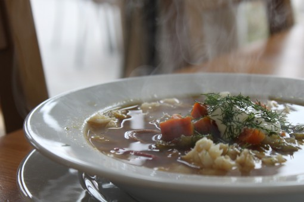

En enkel og smakfull fiskegryte med høstens beste grønnsaker og en god råvare fra havet.
4-500 gram torskefilét
1/2 purre
2-3 gulrøtter
1 liten kålrot
4-5 poteter
1 løk, hakket
1 gulbete
3 dl kraft
2 ss hvetemel
3 dl melk
1 ts salt
1/2 ts pepper
2 ss créme fraiche
Dill
1. Sjær alle grønnsakene i terninger.
2. Ha vann/ kraft i en kjele.
3. Tilsett grønnsakene og la det koke 10 - 15 minutter (til det er mørt).
4. Lag en jevning av mel og vann og visp det inn i gryten.
5. Kok opp og la det koke i 10 min for å bli kvitt melsmaken.
6. Smak til med salt og pepper og evt buljongterning.
7. Rør créme fraiche forsiktig inn i gryten.
8. Ha fisken i gryten og le den trekke til den er ferdig.
9. Tilsett gjerne litt dill.